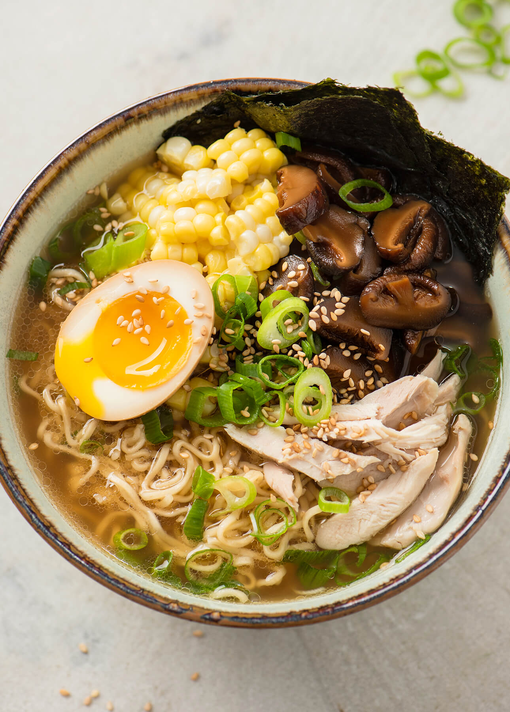

Momofuku Ramen

Description
From the Momofuku cookbook, this broth takes a full day to make so plan accordingly but is worth the effort.
Ingredients
- 2 3" x 6" pieces konbu
- 6 quarts water
- 2 cups dried shiitake mushrooms, rinsed
- 4 pounds chicken, either a whole bird or legs
- 5 pounds meaty pork bones
- 1 pound smoky bacon
- 1 bunch scallions
- 1 medium onion, halved
- 2 large carrots, roughly chopped
- Taré
Steps
- Rinse konbu, then add to water to 8-quart stockpot. Bring to simmer and let steep for 10 minutes
- Remove konbu from the pot and add shiitakes. Turn heat back to high and bring to a boil, then immediately simmer for 30 minutes
- Heat oven to 400° F
- Remove mushrooms using a spider or slotted spoon. Add chicken to the pot and keep liquid at a simmer. Check chicken after an hour. The meat should pull easily from the bones. If it doesn't continue to simmer until it does. Then remove the chicken from the pot.
- While the chicken is simmering, roast pork bones on a baking sheet for an hour, turning them over after 30 minutes to brown all over.
- Remove the chicken from the pot and add roasted pork bones as well as the bacon. Maintain a simmer, remove the bacon after 45 minutes and continue roasting pork bones for another 6 hours. Replenish water in the pot until hour 4 or 5
- Add the scallions, onion, and carrots and simmer for the final 45 minutes
- Remove and discard simmered bones and vegetables and pass the broth through a fine strainer or a strainer lined with cheesecloth.
- Season broth with taré to taste. I use a lot...